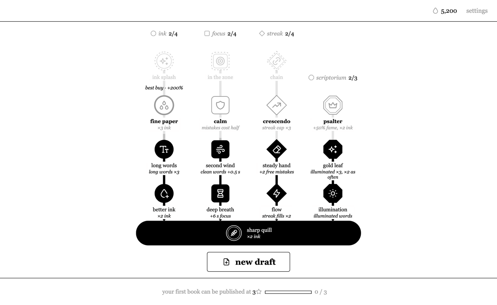
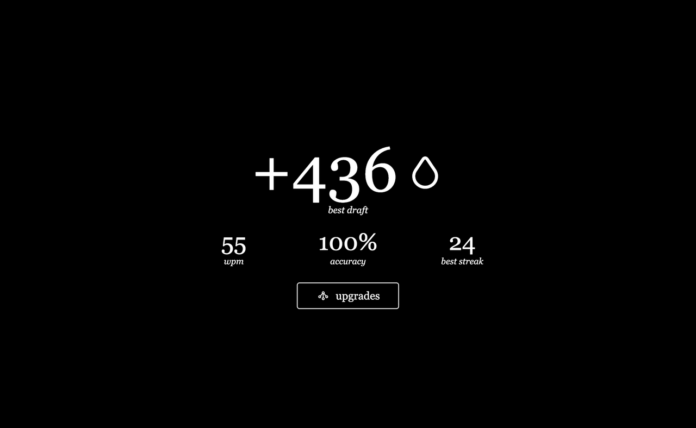

catch the words
Words drift across the page. Type the first letter to aim at one, the rest to catch it before it escapes.
fill the inkwell
Every word is ink. Spend it on upgrades that fill columns of ink: more ink, more focus, longer streaks.
publish your books
Publish to earn fame, and fame opens new eras. Then the Magnum Opus, and challenges with no end.
iscriptorium
Illuminated words, slow and worth four times the ink.
iiTypewriter
Capitals and punctuation. The bell rings: hit Enter.
iiicomputer_
Bugs crawl into words and sw@p letters for symb0ls.
ivFuture
Whole phrases, arriving faint. Catch them early.


